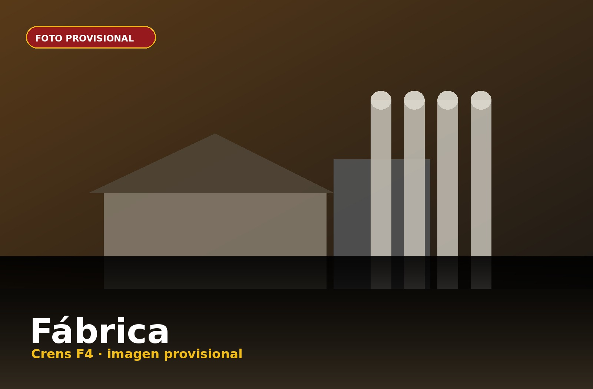
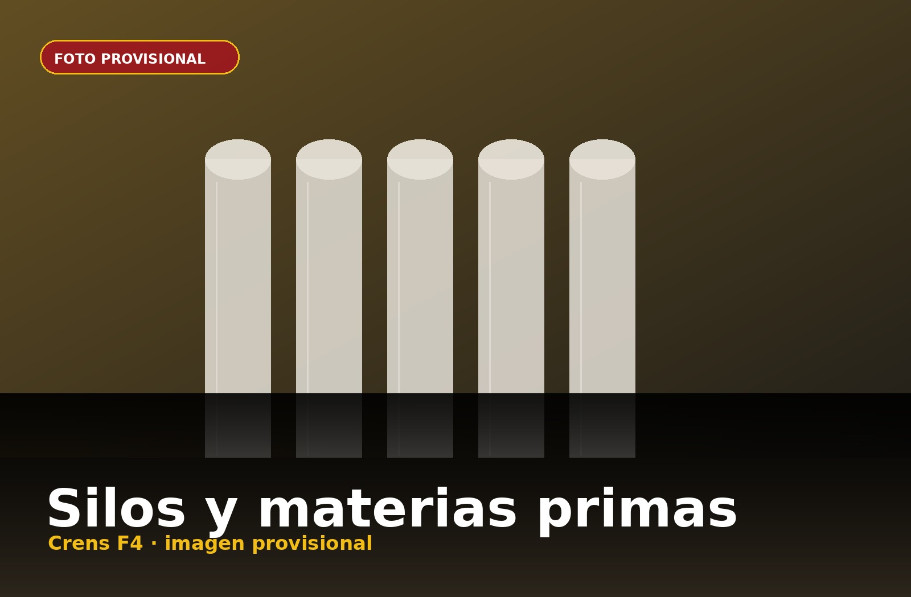
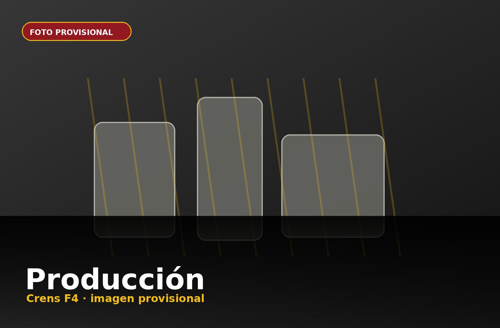
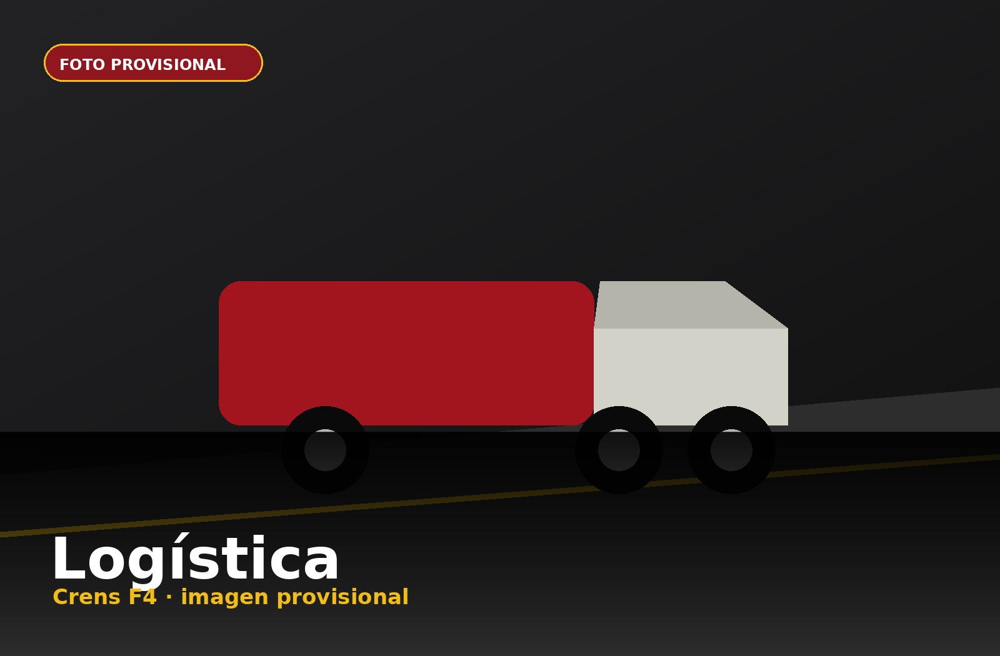

Vista aérea
Fachada, silos y conjunto industrial.
Instalaciones, proceso productivo y espacios preparados para fotos y vídeos reales.
Esta página queda lista para sustituir imágenes provisionales por fotografías y vídeos reales de la fábrica.

Foto provisionalFachada, silos y conjunto industrial.

Foto provisionalAlmacenamiento y recepción.

Vídeo provisionalMolido, mezclado y granulación.
 Foto provisional
Foto provisional
Control y análisis.
Producto listo para expedición.

Vídeo provisionalExpedición y camiones.